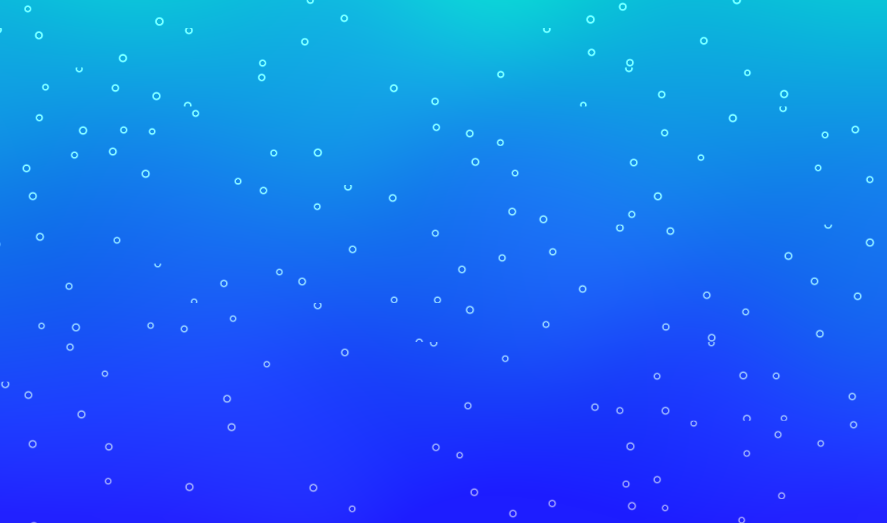
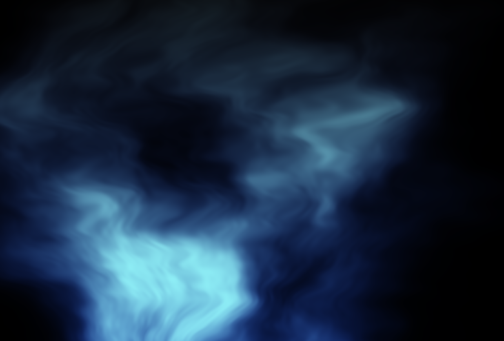
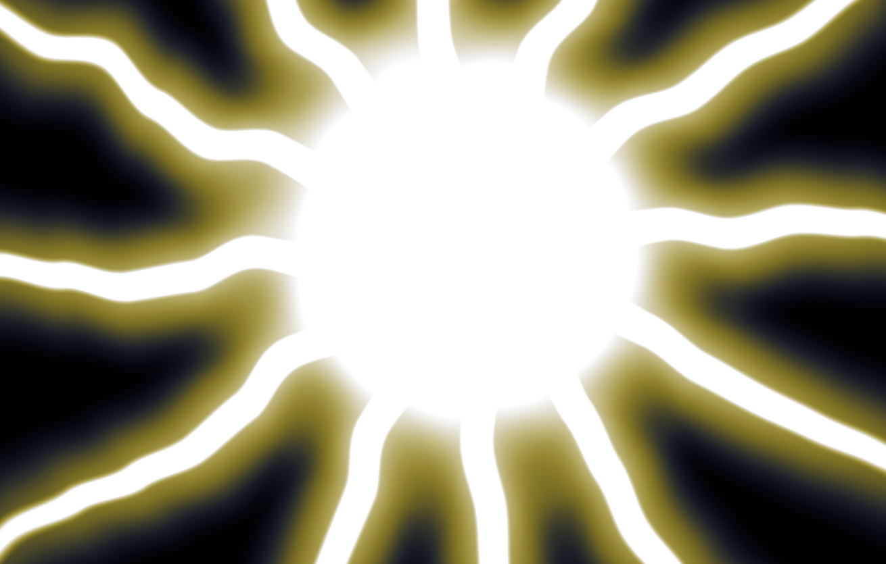

WebGPU Intro
Objective:
Create a fullscreen fragment shader incorporating live video,
noise, and different interaction mechanisms.
Project Images:



Explaination:
Tech -
I used various noise functions from the textbook to simulate the four elements.
Water uses 2D simple noise to create the current and light effects.
The bubbles are generated using procedural tiling with 2D random function.
Fire uses fractual brownian motion to get the wobbly effect.
Earth uses cellcular noise for its tiles and mouse distortion.
Vector math is the main component of the electro element, but it also uses noise for the jagged shape.
The rest of the shader code is just a lot of color mixing and smoothsteping to get the right look.
For interactive mechanisms, I implemented toggle, slider, button, mouse position, and mouse click in html.
They each add interesting variation to the elements.
I incorporated live video by allowing custom live video background on top of the elements.
Aesthetic -
While reading through the noise chapters, I was awed by the chaotic yet patterned effect produced by noise functions.
I think these features fit nicely with the elements like water and fire.
I explored different noise functions on the element I think that best simulates it.
I was also exploring various interactive mechanisms to make the elements more interesting.
Each element has a toggle on/off to allow users to freely combine the elements.
Making live video a background further extends that freedom.
Feedback:
"this is very cool! i like how varied your effects are, and the contrast
with fire/electro when having the 'earth' toggled on is jarring (not a bad thing).
i think it would have been neat to have the water distort the camera feed,
though im not sure how difficult that would be since I havent gotten to implementing that yet.
overall good stuff"
- jay
I anticipated people would like the variety of elements and the freedom to combine them.
I am also not surprised that people think the live video background could need more work, since
it was a pain for me to implment live video. I was unable to make it more interactive and interesting.
But I am glad that people like the elements.